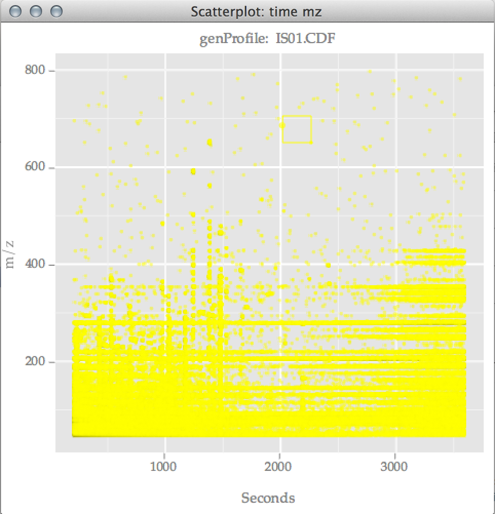
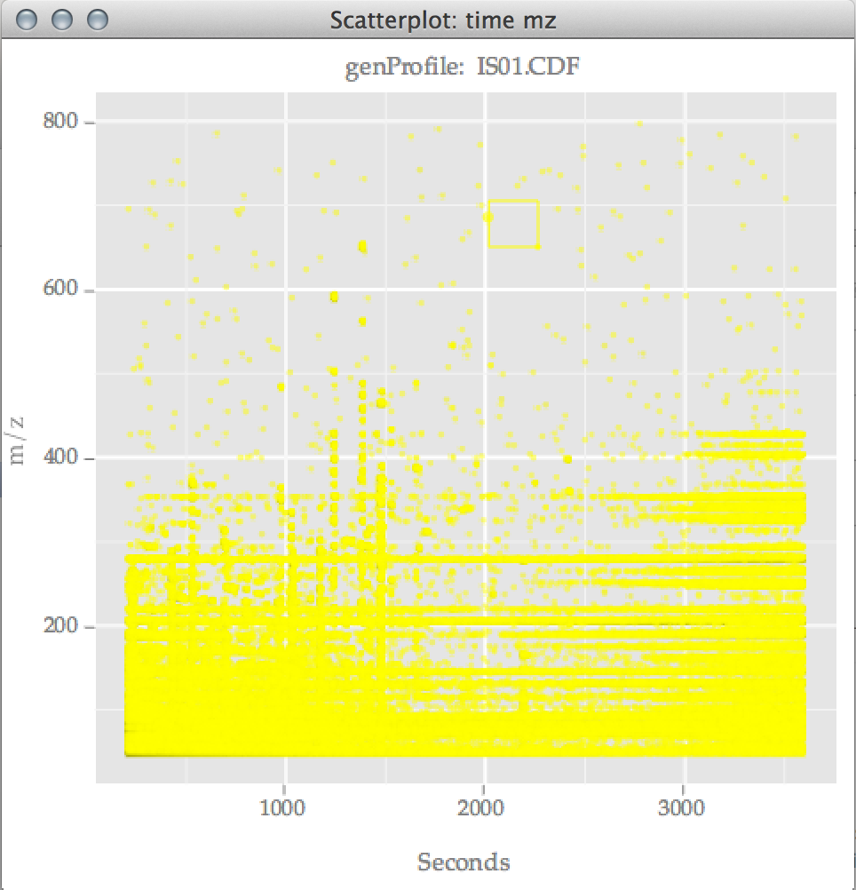

Organization of this talk
- Biologists' Perspective
- What is Metabolomics?
- Collecting data
- Challenges of analysis
- Demo
- Developers' Perspective
- How to customize cranvas plots
- Troubleshooting a workflow
the systematic study of the unique chemical fingerprints that specific cellular processes leave behind


Acknowledged issues with analysis
- Poorly resolved peaks
- Peak shape?
- Intensity variation
- Drift between spectra, instruments
- Biological variance
- The combinatorics problem
Other issues with analysis
- "black box" approach
- multiple software, defaults
- documentation, reproducibility
the Automated Mass Spectral Deconvolution and Identification System (AMDIS) spectral deconvolution software (Version 2.62) from NIST (National Institute of Standards and Technology) was used to process the total ion chromatogram and the EI-MS spectra of each GC peak.
Demo time!
chromatoplotsGUI used in this presentation at: https://github.com/mariev/chromatoplotsgui/tree/stat-graphics-SP2013
library(chromatoplotsgui)
library(chromatoplots)
setwd("chromatoplotsgui/data/raw/treatment_0")
raw1 <- loadSample(dir())
prof <- genProfile(raw1)
cor <- removeBaseline(prof, 'median', scanrad = 100)
## peaks <- findPeaks(cor, 'gauss')
## save(peaks, file = 'peaks.rda')
load("chromatoplotsgui/data/peaks.rda")
cgfindPeaksPlot(peaks, cor, 201)
Developer Perspective
Want :: customize existing plots from cranvas
require(cranvas)
require(qtpaint)
## the cranvas plot
myplot <- qscatter(data = qdata(iris), x = Sepal.Length, y = Sepal.Width )
## define new handlers
newpaint <- function(layer, painter){...}
newhover <- function(layer, event){...}
newkeyPress <- function(layer, event){...}
## create the layer
newlayer <- qlayer(paintFun = newpaint,
hoverMoveFun = newhover,
keyPressFun = newkeyPress,
limits = qrect(myplot$meta$limits))
## add/sync layer to cranvas plot
myplot$layerList[[1]][1,2] <- newlayer
sync_limits(myplot$meta, newlayer)
## push the plot
myplot
Want :: validation of workflow
baselevel.
- Good
baselevelvalue :: allows for distinguishing between minimum observed and auto-populated - Weak choice :: set
baselevelequal to minimum of observations
 

<Thank You!>